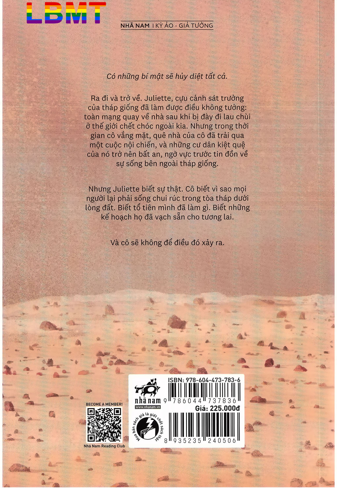

[*] Một thí nghiệm xã hội thực hiện tại vườn quốc gia Robbers Cave, Oklahoma. Trong thí nghiệm này, một đám trẻ con được chia thành hai nhóm riêng biệt. Chúng rất nhanh chóng hình thành định kiến tiêu cực về những thành viên không thuộc nhóm mình và định kiến tích cực về những thành viên trong nhóm.
[*] Một chuỗi thí nghiệm do nhà tâm lý học Stanley Milgram thực hiện. Trong thí nghiệm này, một nhóm người được yêu cầu bấm nút theo lệnh để chích điện một người khác. Kết quả cho thấy rất nhiều người tham gia sẵn sàng bấm nút theo lệnh, dù làm thế sẽ khiến người khác bị đau đớn.
[*] Các thí nghiệm về hành vi do B. F. Skinner thực hiện. Trong thí nghiệm này, một con chuột bị nhốt vào trong hộp và nhận được một loạt tác nhân kích thích, cả tiêu cực lẫn tích cực. Bằng cách thao túng các tác nhân ấy, Skinner có thể dần định hình một số thói quen nhất định cho con chuột.
